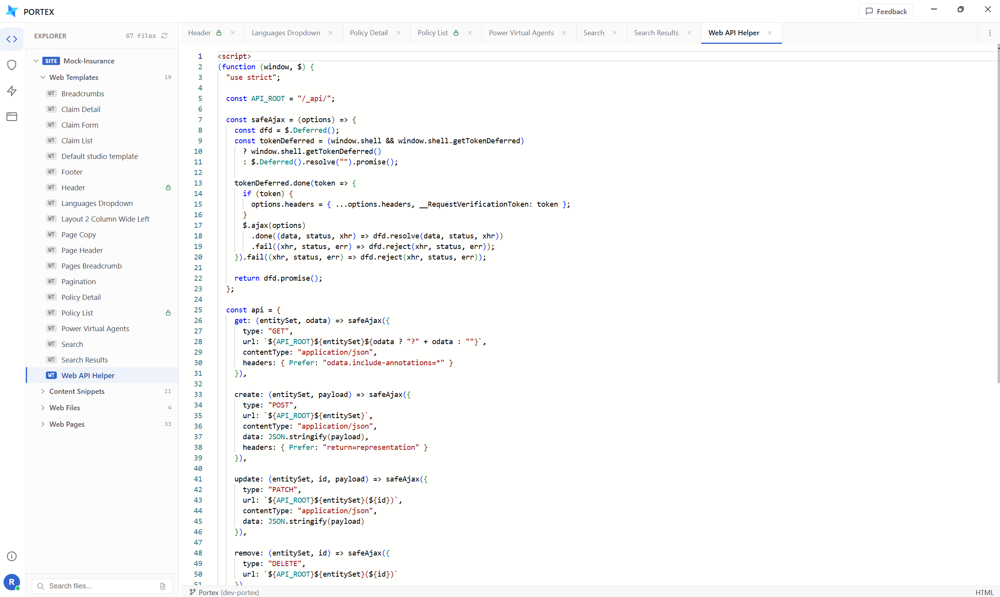
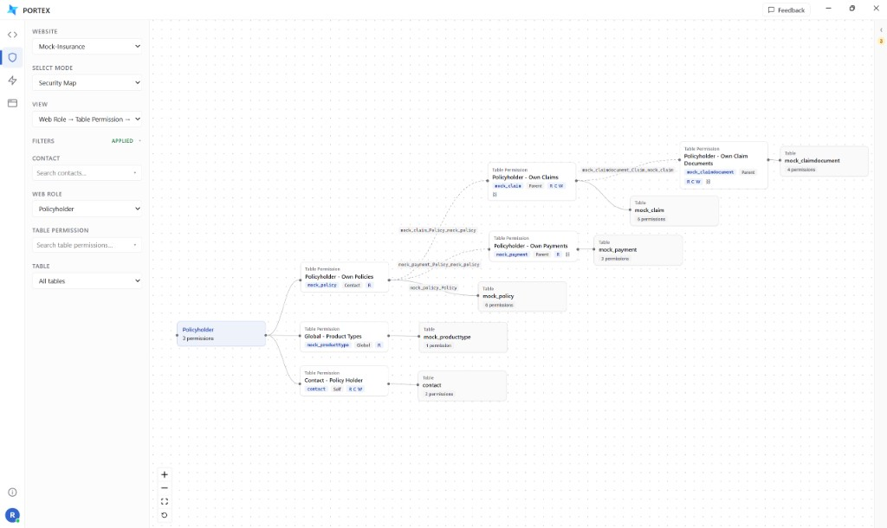
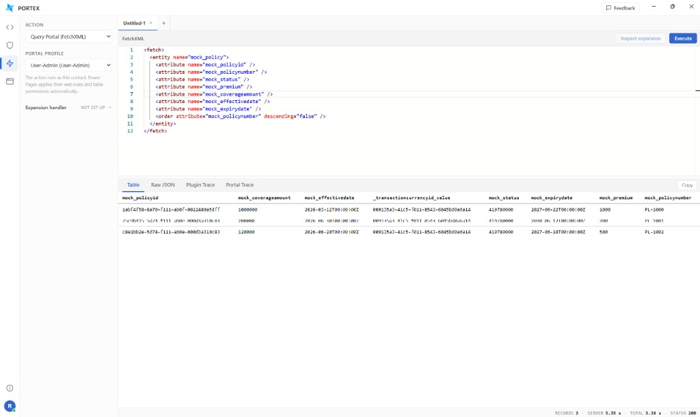
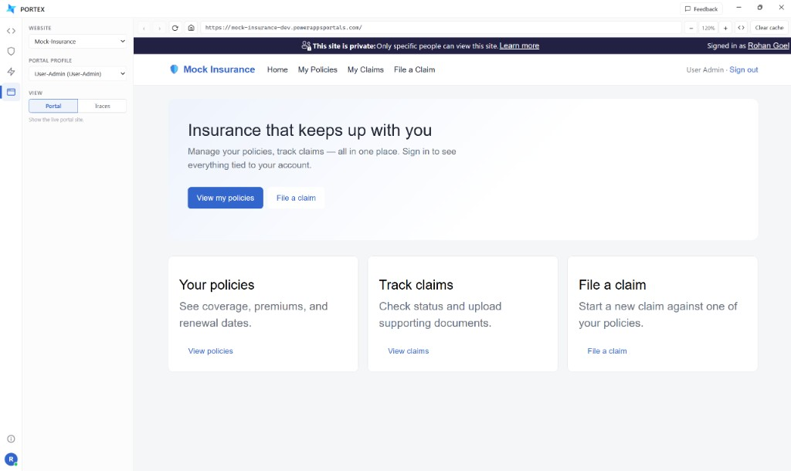
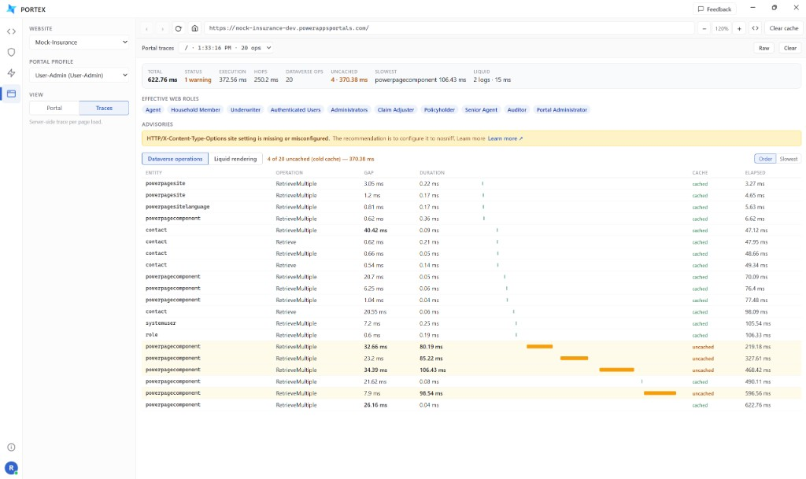

01 — Code editor
Portal files, in an editor that saves back to Dataverse.
- Web templates
- Content snippets
- Web files
- Web pages
Browse a website’s files and edit them in Monaco. Save writes to Dataverse. Bind Azure DevOps when you also want a lock and a commit, with a personal access token and no app registration. Standard and enhanced Power Pages data models both open here.

02 — Security analysis
A map of who can reach which tables.
Pick a web role and Portex draws its table permissions, parent relationships, and the tables they grant. Filter by contact, web role, or table and the map rebuilds around that slice. Access trace walks one contact through the same model.

03 — Query executor
Run the query the way the portal would.
Execute FetchXML as a portal contact, so that contact’s web roles and table permissions apply. Rows come back under the query, with the raw payload and the server, plugin, and portal traces in the next tabs. Web API calls and Liquid renders use the same contact.

04 — Live portal viewer
The real site, already signed in.
Choose a website and a portal profile. Portex opens that site in the contact’s session, including a private site, and can clear the portal cache from the toolbar. Traces turns the same page load into the Dataverse and Liquid work behind it.


Install it where you already work.
Free to download and use, including at work. Open the Tool Library in XrmToolBox and install Portex. It takes the Dataverse connection that is already open.